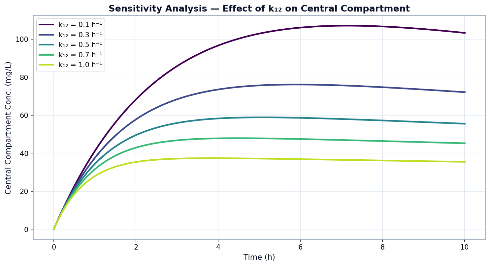
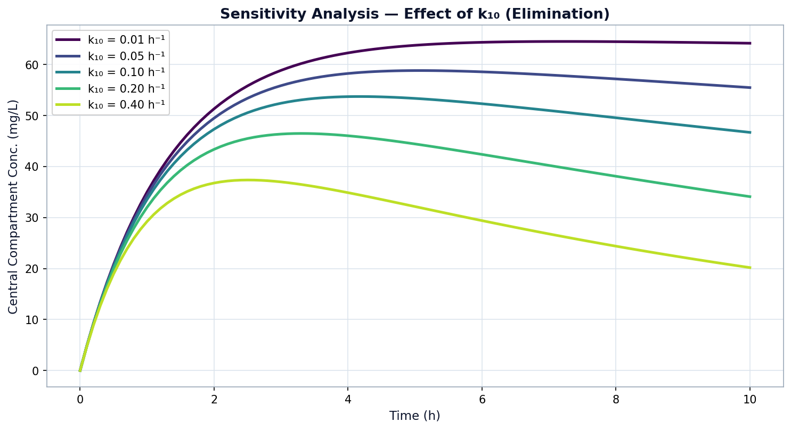

What happens when we change the speed values, what those changes mean for a real patient, and the changes the original researchers made to the basic model.
To find out which speed value matters most, we changed each one in turn across a sensible range and watched what it did to the blood level. The ranges we used sit around the values from the paper and cover what other studies have reported as realistic.
We tried $k_{12}$ from 0.1 up to 1.0 per hour, with 0.5 as the starting point. The higher this value, the faster the drug rushes into the tissues. This makes the concentration of the drug in the blood peak both smaller and sharper, because the more quickly the drug leaves the blood, the less of it is sitting there at any one time.

We tried $k_{10}$ from 0.01 up to 0.40 per hour, with 0.05 as the starting point. This one turned out to have the biggest effect on how much drug the body sees overall. Raising it pulls the whole curve of the concentration in the blood down and clears the drug out sooner, which is what you would expect in a patient whose liver and kidneys are working well.

These graphs stand for real things. The value $k_{10}$ matches how well a patient clears the drug, which drops when the kidneys are not working well, so the dose has to come down to stay safe. The values $k_{12}$ and $k_{21}$ match how the drug spreads into the tissues, which changes with body type. Since clearing the drug has the biggest effect on the total amount the body takes in, that is the value doctors need to judge most carefully when setting a dose for each person.
No research model is used exactly as it comes out of the textbook. The study by Fatima et al. (2025) made a few clear changes to the basic two-compartment model, and these are the ones we report and look at here.
The basic model follows the amount of drug in milligrams. The researchers switched it to follow concentration in mg/L instead, by dividing through by the size of each compartment. Doctors measure concentration in the blood, not the raw amount, so this makes the maths line up with what is actually checked in the clinic.
Studies like this usually only use simple one-step methods. The researchers added the Adams–Bashforth–Moulton method, which makes a guess and then corrects it, to see whether this kind of method is actually more accurate. Earlier work had not really settled that question.
Instead of only comparing the methods against each other or against lab data, the researchers worked out the exact answer using eigenvalues. That gave them a fixed reference, so they could measure exactly how far off each method was at every time step.
The speed values ($k_{10} = 0.05$, $k_{12} = 0.50$, $k_{21} = 0.25$ per hour) were taken from known pharmacokinetic studies rather than chosen at random, which keeps the whole simulation close to what really happens in the body.